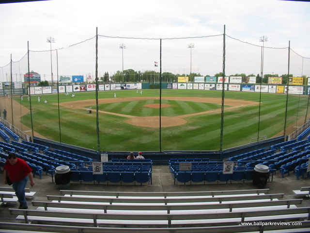

The Great Falls Voyagers are a Minor League Baseball team based in Great Falls, Montana. The team has played continuously in the Pioneer League since 1969, and previously played in the league from 1948 to 1963. The Voyagers have been the Advanced Rookie affiliate of the Chicago White Sox since 2003. Previously, the team was affiliated with the Los Angeles Dodgers (1984–2002), San Francisco Giants (1969–1983), and Brooklyn/Los Angeles Dodgers (1952–1963). The team was not affiliated with any Major League Baseball team from 1964 to 1968. The Voyagers play their home games at Centene Stadium. The "Voyagers" name refers to the Mariana UFO incident in August 1950 when Nicholas "Nick" Mariana, the general manager of the Great Falls Electrics, saw two spinning objects approaching at a seemingly high speed. Mariana recorded 16 seconds of footage of the unidentified flying objects at Legion Park. Follow @gfvoyagers
